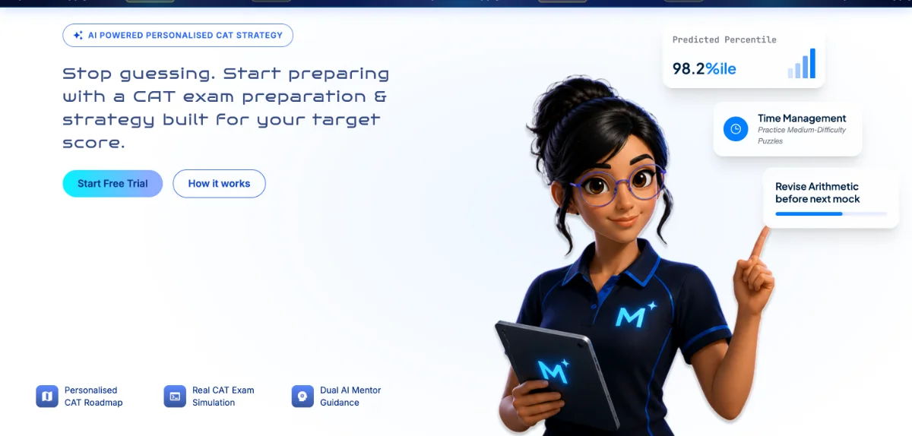
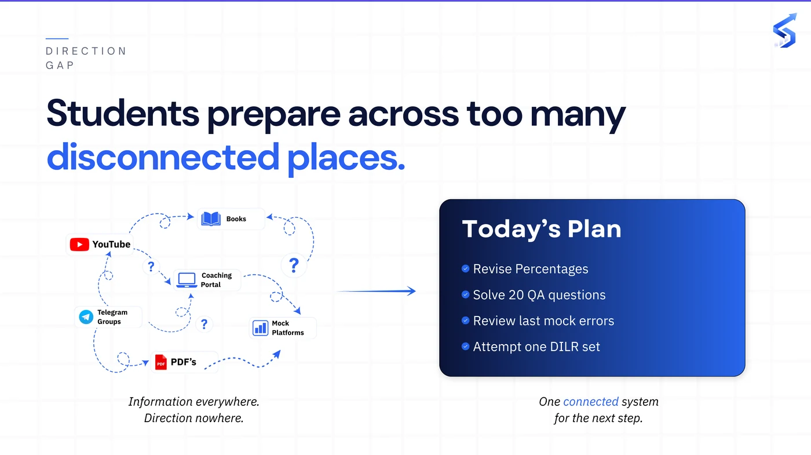
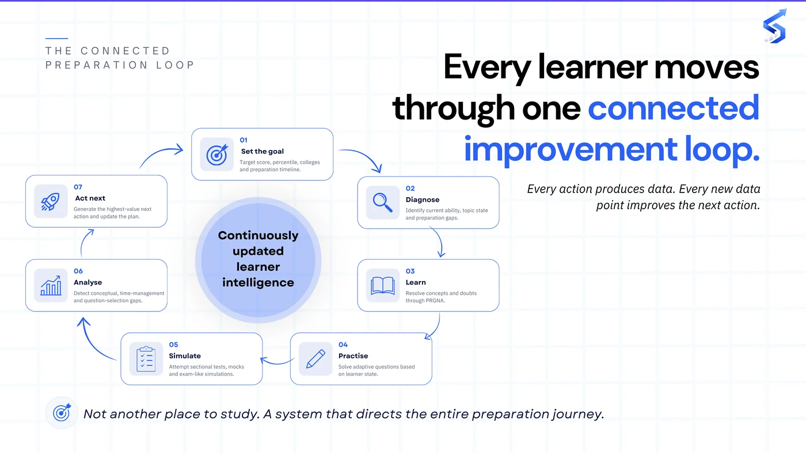
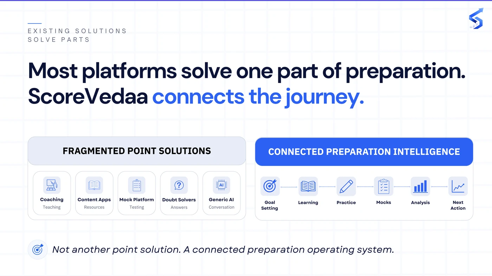
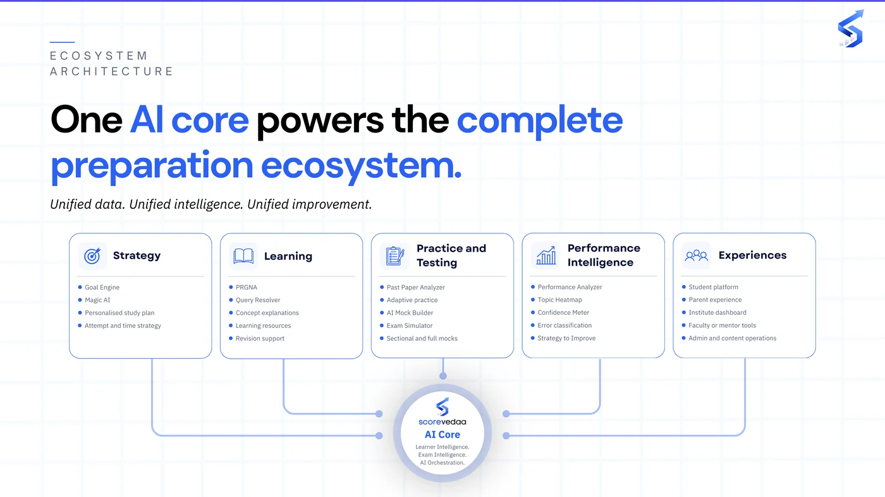

ScoreVedaa · product landing page
ScoreVedaa
One of two AI products I'm actively building inside NeuraMach.AI's studio.
Problem
CAT exam prep is generic: every student gets the same mock test and the same syllabus order, and institutes see the aggregate score, not why a student is actually stuck, so guidance defaults to "practice more."
Approach
Own the product end-to-end: diagnostic assessments, personalized action plans, adaptive practice journeys, and the recommendation logic behind them. Write the PRDs that turn student and coaching-institute pain points into scoring logic and success metrics, set a responsible-AI and data-consent framework for personalized learning, and run B2C and B2B tracks in parallel: one for students, one for institutes who need better insight, not a competing product.
Outcome
In beta-launch planning and iteration, with the feedback loop already running back into the roadmap. No inflated numbers here: that's the honest state of a beta.



